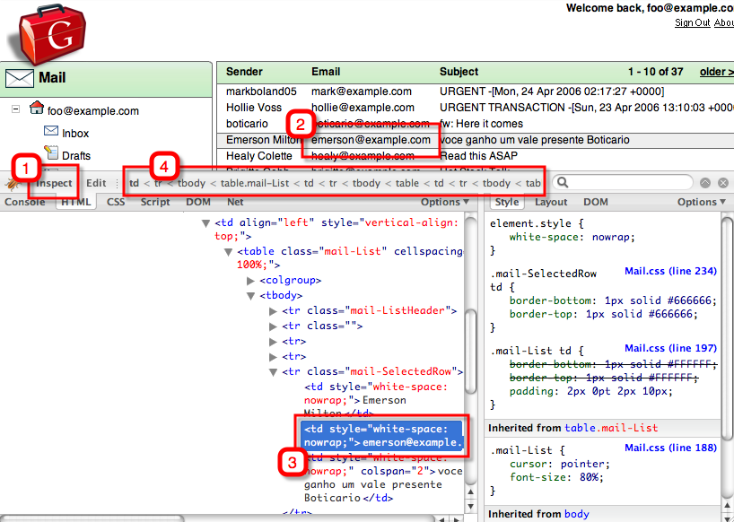

What is XPath
This page explains how Selenium Core can be deployed to test or script web applications.XPath trial and error
Brian Slesinsky has a great tool called XPath Checker for Firefox. Its a plugin, that is well worth installing into Firefox.There is another, more well known plugin called Firebug for Firefox. It allows you to inspect a page at run time. With the advent of AJAX web apps, there where a page structure is only apparent at run time, then it is invaluable.
Using the 'email' example of the GWT sample applications, to illustrate the point, load it up and go into firebug. Clicking 'Inspect'' (1) in firebugs toolbar and clicking on a node in the page (2) takes you to the relevant html that represents it (3). There are some breadcrumbs that show where you are in the page (4)......

If you right-click on that breadcrumbs place, you can get to a menu that will give you xpath for it...

Using that menu, gives the following as the xpath for that node ...
/html/body/table/tbody/tr[2]/td[2]/table/tbody/tr/td/table/tbody/tr[5]/td[2]
Bug that is too unweildy for use in a Selenium script. Use Xpath to make it more concise....
TODO